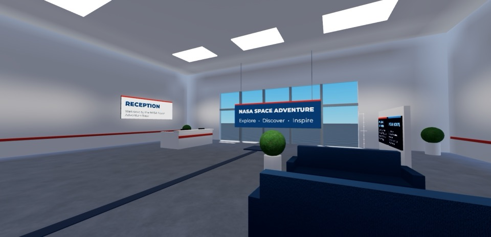
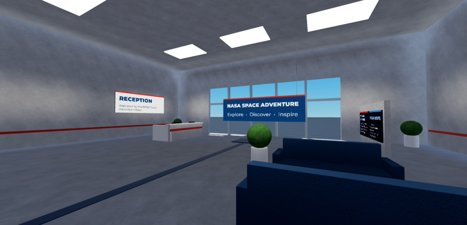
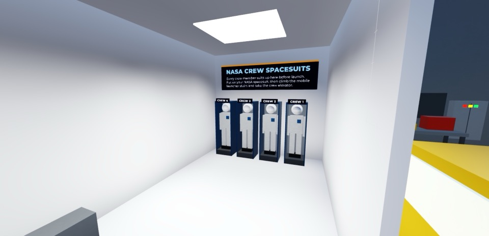
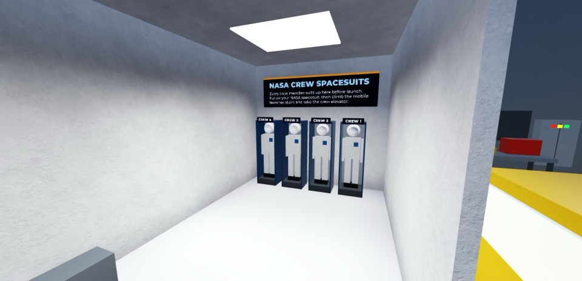
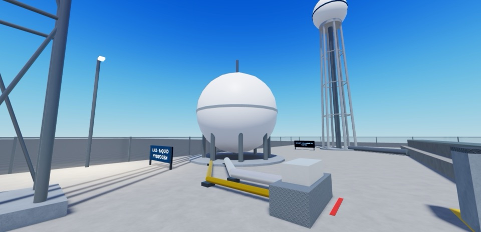
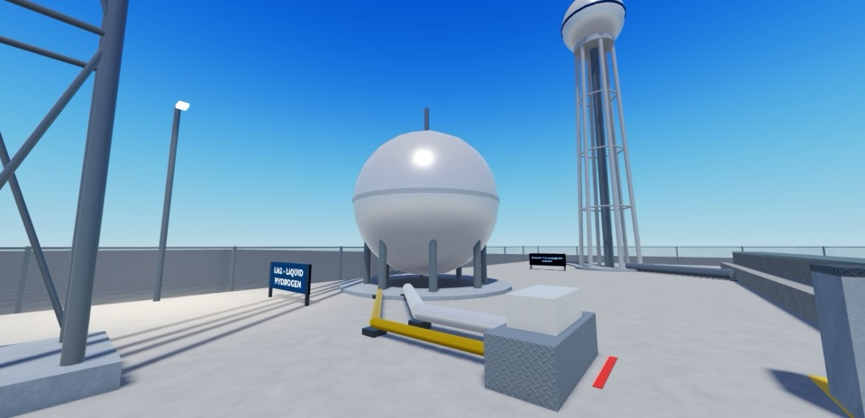
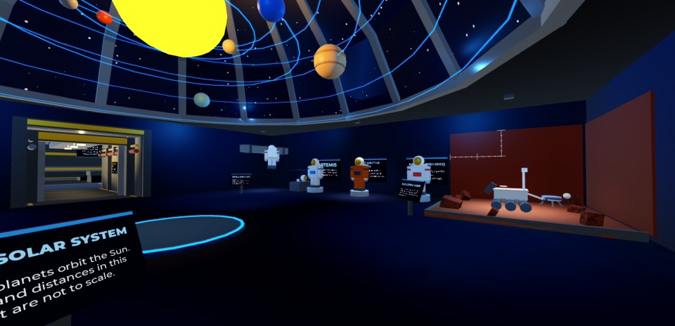
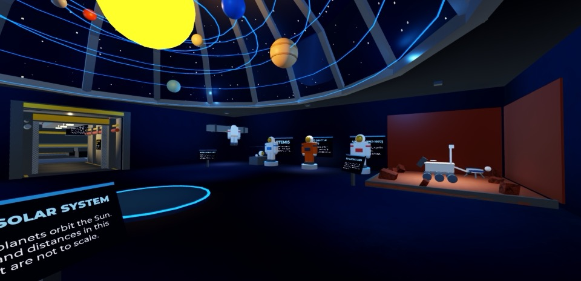
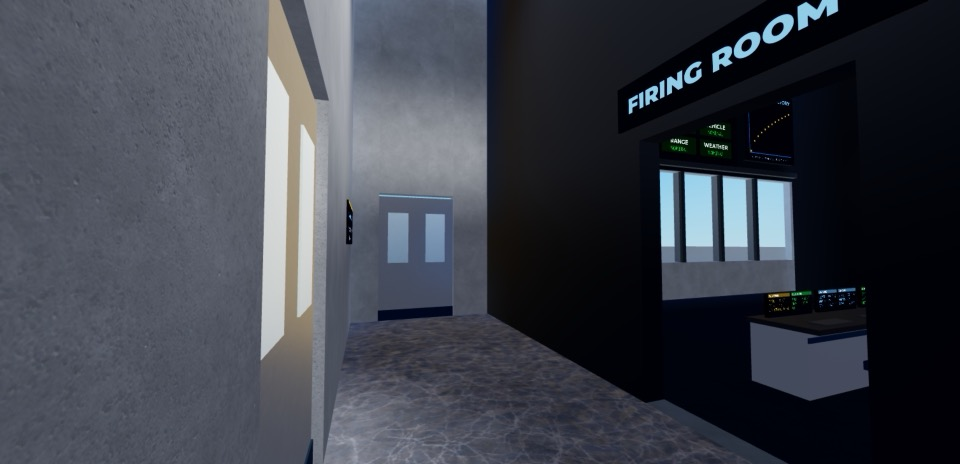
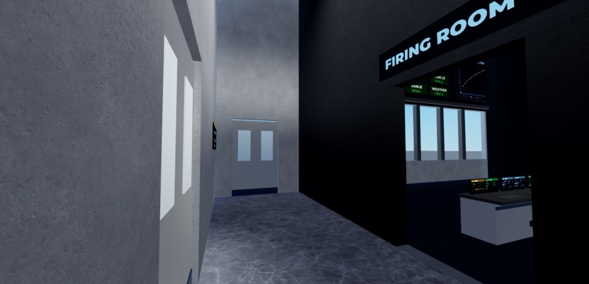

Materiais: A (plástico liso, atual) × B (reboco nas paredes claras, metal nos tanques)
Mesma câmera e iluminação já assentada (Realistic + Ambient 105/108/118). Claridade perceptual média e fração estourada (> 0,85) em cada imagem.
RecepçãoA 0,44 · 3,2%
B 0,38 · 3,2%

A — liso
B — reboco: mais escura e manchadaVestiárioA 0,74 · 46%
B 0,68 · 36%

A — liso, branco estourado
B — reboco: textura e menos estouroTanque LH2A 0,64 · 3,5%
B 0,63 · 1,7%

A — liso
B — metal: brilho especularMuseuA 0,12 · B 0,11

A
B — sem diferença visível (paredes escuras)LCC (saguão)A 0,27 · B 0,27

A
B — sem diferença visível